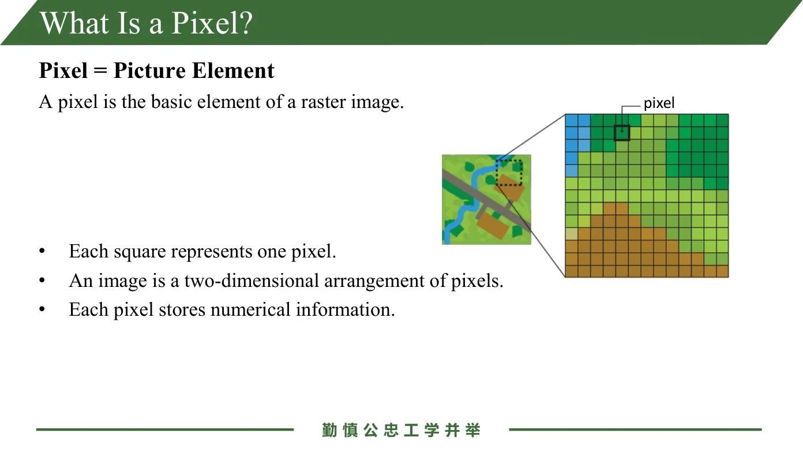
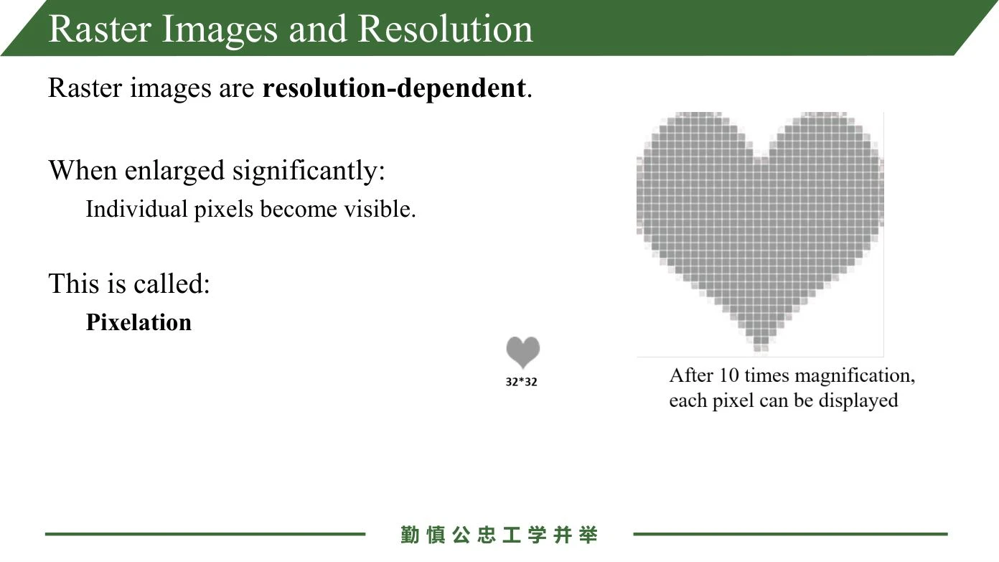

HDD5020 信息处理基础（计算机导论） · 第 05 / 12 讲
Week 5 · 图像表示：采样、量化、编码与 RGB
Image Representation
所属章节：第 3 章 数字编码与压缩
资料来源 · 2 项 / 已附 0 项
Week5- Image Representation/Lecture5.pdf未附原文件Week6- Audio and Video Representation/Exercise 3.pdf未附原文件
未附文件仅列原始名称；版本与核对日期由维护者登记。
本节定位
上一讲把文字变成了字节。这一讲把「看得见的东西」变成字节：一张照片在内存里到底是什么？答案是三层——先采样（在哪取点）、再量化（每点取什么值）、最后编码（值怎么写位）。这三步与上一讲的「字符 → 码位 → 字节」是同一套思路，只是把「符号」换成了「亮度」。
本讲还要算清一件事：图像到底占多少空间。公式只有一条 W × H × B / 8（宽 × 高 × 每像素位数 ÷ 8），但它是后面所有多媒体计算题的母公式——第 6 讲的音频、视频，第 7 讲的压缩比，都从这条公式出发。
最后一块内容是栅格与矢量的分工：照片用栅格，logo 用矢量。这不是审美偏好，而是「信息本质不同」导致的必然选择：连续色调适合采样成像素，几何形状适合写成数学描述。
学完本讲你应当能够：
- 用「采样—量化—编码」三步说明任何图像怎样变成数字
- 区分采样（离散化位置）与量化（离散化取值）
- 计算分辨率给出的总像素数，并换算成百万像素（MP）
- 说明 8 位灰度为什么有 256 级、24 位 RGB 为什么有约 1 677 万色
- 用
W × H × B / 8计算未压缩图像的字节数并换算单位 - 说明栅格与矢量的差别，并针对具体任务选择合适的一种
- 解释「色深」这个词在不同表示下含义为何不同
一、从连续到离散：数字化的三步
课件开篇先立一个前提：现实世界的图像本来不是数字的。现实世界是连续的视觉信息，而计算机需要离散的数值数据。把连续信息转成离散数字数据的过程叫数字化（digitization）。
数字化的流水线固定为三步：
现实场景 → 采样（Sampling）→ 量化（Quantization）→ 编码（Encoding）→ 二进制数据这三步各回答一个问题，课件在第 20 页把它们并列得非常清楚：
| 步骤 | 回答的问题 | 输出 |
|---|---|---|
| 采样 Sampling | 在哪里测量？（Where?） | 像素网格 |
| 量化 Quantization | 给它什么值？（What value?） | 有限的数值集合 |
| 编码 Encoding | 怎样用位表示？（How in bits?） | 二进制数据 |
记住这三问，后面讲音频与视频时你会发现它们一字不改地复用（第 6 讲：采样 = when、量化 = what value、编码 = how）。
二、数字图像与像素
2.1 数字图像的定义
课件定义：数字图像是视觉信息的数值表示。它由许多像素组成，每个像素带有数值信息，这些数值可以用位来表示：
图像 → 像素 → 数值 → 二进制数据2.2 像素
像素（pixel）= picture element（图像元素）。课件说它是栅格图像的基本元素：每个小方格代表一个像素，图像就是像素的二维排布，每个像素存一份数值信息。
2.3 把图像看成一个二维矩阵
灰度图像可以直接写成矩阵。课件给了记号 I(x, y)：x 是水平位置，y 是垂直位置，I(x, y) 是该位置的像素值。
100 120 135 150
80 95 110 125
50 70 90 105这个视角很重要：一旦图像变成矩阵，所有矩阵运算都能用在图像上（求平均做模糊、求差分做边缘检测、做直方图统计分布）。第 7 讲压缩时「相邻像素高度相关」这句话，指的就是矩阵里相邻元素数值接近。
三、采样：决定在哪里取点
3.1 定义
采样从连续信息中选取离散位置。它回答「在哪里测量」：把连续的空间信息变成离散的像素位置。
连续图像 → 在离散位置测量 → 像素网格3.2 一个直观的想象
把连续图像想成一整片颜色连续变化的区域，采样就是在上面盖一张网格，网格的每个交叉点成为一个像素位置。课件特别提醒一句：每个像素记录的颜色/亮度值仍然是连续的——采样只解决了「位置」，没解决「取值」。取值留给量化。
3.3 采样与空间分辨率
采样点的数量决定空间分辨率（spatial resolution）：采样点越多，能表示的细节越多。课件用两组疏密不同的点阵对比：
低采样： • • •
• • •
高采样： • • • • • • • •
• • • • • • • •3.4 分辨率怎么写
图像分辨率用像素数描述。课件给了四个常见值：
| 分辨率 | 含义 | 常见场景 |
|---|---|---|
| 640 × 480 | 横向 640、纵向 480 | 早期视频、低清 |
| 1280 × 720 | 720p | 标清视频 |
| 1920 × 1080 | 1080p（全高清） | 主流视频、显示器 |
| 3840 × 2160 | 4K UHD | 高清视频、专业显示 |
注意写法是「宽 × 高」，不是「高 × 宽」。顺序反了不影响总像素数，但影响你对画面比例的判断。
3.5 总像素数与百万像素
公式：
像素总数 = 宽 × 高
1920 × 1080 = 2 073 600约 207 万像素，通常写作 2.07 MP（megapixel）。手机相机标称的「4800 万像素」，说的就是这个乘积。
3.6 分辨率高不等于画质好
课件特意加了一句反直觉的提醒：更高分辨率通常能表示更多空间细节，但高分辨率并不自动等于更好的画质。画质还取决于：
镜头 lens 传感器 sensor 光照 lighting 噪点 noise 颜色表示 color representation 图像处理 image processing这句话在考试里常以「为什么 4800 万像素的手机照片不如 2400 万像素的单反」出现。答案是：像素数只是采样密度，量化精度、镜头解析力、噪声水平都会限制最终画质。
四、量化：决定每点多亮
4.1 定义
采样之后，每个像素仍然是一个连续量（例如某个亮度）。量化把连续值映射到有限的离散值集合。它回答「给它什么值」。
连续亮度 → 量化 → 离散数值4.2 与采样的对照
| 过程 | 主要问题 | 例子 |
|---|---|---|
| 采样 Sampling | 在哪里测量？ | 像素网格 |
| 量化 Quantization | 给它什么值？ | 亮度 0–255 |
一句话：采样离散化位置，量化离散化取值。这两个词在学生作业里最常被混，记住这句就不会错。
4.3 量化的样子
假设亮度是 0 到 1 的连续量，量化把它切成有限档：
0 ─────────────────────── 1
0 1 2 3 4 5 6 7本来有无穷多个可能值，现在只用 8 个。档数越多，越接近原始连续值；档数越少，越容易出现「色带」（banding）。
4.4 灰度约定
灰度图像表示亮度。课件给的约定是：0 → 黑、255 → 白，中间是各种灰。
0 64 128 192 255
黑 白4.5 8 位灰度
8 位像素有 2^8 = 256 种可能值，于是：
8 位灰度 → 256 个灰度级，范围 0–255
这个数字与第 4 讲的 ASCII（128 个字符）形成对照：位宽决定容量，7 位给 128、8 位给 256。
4.6 灰度图就是一张数字表
课件给了第二个矩阵例子：
20 50 80
100 130 160
180 210 240所以「灰度图像本质上是一个二维数字数组」。这句话把图像处理与数组处理接上了：一张 8 位灰度图，就是 height × width 个 0–255 的整数。
五、编码：把值写成位
量化之后我们有一堆离散数值。编码规定这些值怎样表示成数字数据。它回答「怎样用位表示」。
量化值 → 编码 → 二进制数据课件给了一个最简单的例子：某像素值是 128，用 8 位二进制编码就是 10000000。
这个概念与上一讲的 ASCII 完全对应：一个是「字符 → 编号 → 字节」，一个是「亮度值 → 8 位二进制」。都是把有限集合里的元素映射到固定长度的位串。
六、彩色图像与 RGB
6.1 RGB 模型
课件问：计算机怎样表示颜色？常见方法是 RGB 彩色模型，RGB 分别是 Red、Green、Blue。一个颜色像素写成三元组 (R, G, B)。
为什么是这三种颜色？因为人眼视网膜有三类视锥细胞，分别对长、中、短波敏感。用三原色按比例叠加，就能「骗过」视觉系统产生任意颜色的感觉。这是感知层面的设计依据，不是物理上的唯一方案。
6.2 关键颜色表
| 颜色 | R | G | B |
|---|---|---|---|
| 黑 Black | 0 | 0 | 0 |
| 红 Red | 255 | 0 | 0 |
| 绿 Green | 0 | 255 | 0 |
| 蓝 Blue | 0 | 0 | 255 |
| 白 White | 255 | 255 | 255 |
这张表有两个可推的规律：三通道全 0 是黑，全满（255）是白；只点亮一个通道得纯色。所以「灰度」在三通道里是 R = G = B 的情形。
6.3 24 位 RGB
常见表示给每个通道 8 位：
8（R）+ 8（G）+ 8（B）= 24 位/像素 = 3 字节/像素6.4 一共多少种颜色
每个通道有 2^8 = 256 种取值，三个通道组合：
256 × 256 × 256 = 256^3 = 16 777 216
约 1677 万色，这就是常说的「真彩色」（true color）。课件写作 approximately 16.7 million colors。
6.5 一个像素的二进制样子
课件取 RGB = (255, 128, 0)：
R = 255 → 11111111
G = 128 → 10000000
B = 0 → 00000000
拼起来：11111111 10000000 00000000共 24 位 = 3 字节。这个颜色是橙色（红满、绿半、蓝无）。写十六进制就是 FF8000，网页 CSS 里常写成 #ff8000——这正是第 4 讲「十六进制是二进制的压缩写法」的实际用途。
七、色深（color depth）
7.1 定义
色深描述用多少位来表示像素信息。有了 n 位，可能取值数是 2^n：
| 色深 | 可能取值数 | 典型含义 |
|---|---|---|
| 1 位 | 2 | 黑白二值（只有黑与白） |
| 2 位 | 4 | 4 级灰度或 4 色 |
| 4 位 | 16 | 16 色 |
| 8 位 | 256 | 256 级灰度，或 256 色调色板 |
| 24 位 | 约 1677 万 | RGB 真彩色（8+8+8） |
7.2 「8 位」的含义取决于分配方式
这是本讲最容易答错的一个概念。课件专门提醒：「8 位」的意思取决于位怎样分配。
| 说法 | 位怎么分 | 结果 |
|---|---|---|
| 8 位灰度 | 8 位全给亮度 | 256 级灰 |
| 24 位 RGB | 8 位 × 3 个通道 | 约 1677 万色 |
| 8 位索引色 | 8 位作调色板下标 | 从一张调色板里挑 256 种颜色 |
所以答题时要先问「这些位怎么分」。只说「8 位」而不说分配方式，是不完整的答案。
八、图像占多少数据
8.1 公式
对未压缩的栅格图像：
大小（位）= W × H × B，其中 W 是宽、H 是高、B 是每像素位数。
大小（字节）= W × H × B / 8
8.2 算例一：1024 × 768 的 8 位灰度图
像素数：1024 × 768 = 786 432
每像素：8 位 = 1 字节
总字节：786 432 字节 ≈ 768 KiB注意 786 432 / 1024 = 768，正好 768 KiB——因为 1024 × 768 本身就是 2 的幂的乘积，除以 1024 后干净整除。这类题常故意选这种尺寸，算起来快。
8.3 算例二：1920 × 1080 的 24 位 RGB 图
像素数：1920 × 1080 = 2 073 600
每像素字节：24 / 8 = 3
总字节：2 073 600 × 3 = 6 220 800 字节
换算：6 220 800 / (1024 × 1024) ≈ 5.93 MiB课件两次都加了一句提醒：这是未压缩的原始像素数据。真实文件通常更小，因为有压缩（第 7 讲）；也可能更大，因为有元数据与文件头。
8.4 什么在决定数据量
课件给的比例关系：数据量 ∝ 分辨率 × 色深。因此数据量会在三种情况下增大：分辨率升高、每像素位数升高、通道数增多。
MiB = 1024 × 1024 字节，MB = 10^6 字节。5.93 MiB 换成十进制 MB 是 6.22 MB，差 5%。第 4 章与第 6 章会反复用到这个差别，答题时看清题目给的是哪种单位。九、栅格图像（raster）
9.1 定义与例子
栅格图像用像素网格表示图像：图像 → 像素网格 → 像素值 → 二进制数据。典型例子：照片、屏幕截图、扫描文档、数字绘画。
9.2 分辨率依赖与像素化
栅格图像是分辨率相关的。放大到一定程度，单个像素变得可见，这种现象叫像素化（pixelation）。原因很直接：图像里只有那么多像素，放大只是把每个像素铺得更开，不会产生新细节。
9.3 优点与局限
| 优点 | 局限 |
|---|---|
| 适合照片 | 分辨率相关 |
| 能表示复杂颜色 | 放大会像素化 |
| 能表示细腻纹理 | 高分辨率图像占大量存储 |
| 保留像素级信息 | — |
十、矢量图形（vector）
10.1 定义
矢量图像用对象的数学描述表示视觉信息。基本元素是点、线、曲线、圆、多边形。
课件的例子：一个圆由「圆心 (100, 100)、半径 50、颜色红」描述。图形由对象描述，而不是由一个个像素描述。
10.2 栅格与矢量对照
| 对照项 | 栅格 Raster | 矢量 Vector |
|---|---|---|
| 基本单位 | 像素 | 几何对象 |
| 表示方式 | 像素值 | 数学描述 |
| 分辨率相关 | 是 | 一般不是 |
| 照片 | 适合 | 通常不适合 |
| logo / 图标 | 可用 | 常用 |
| 缩放 | 可能像素化 | 可平滑缩放 |
课件加了一句关键说明：矢量图形之所以能平滑缩放，是因为它可以按需重新计算——放大两倍就是把半径改成 100 再画一遍，而不是把已有的点铺开。
10.3 什么时候用哪种
| 适合栅格 | 适合矢量 |
|---|---|
| 照片 | logo |
| 真实场景 | 图标 |
| 复杂纹理 | 示意图（diagrams） |
| 屏幕截图 | 图表（charts） |
| 扫描图像 | 简单插画 |
课件的结论是：合适的表示取决于视觉信息的类型。判据只有一条——信息本身是「连续色调」还是「几何形状」。
10.4 常见格式
| 栅格格式 | 矢量格式 |
|---|---|
| JPEG / JPG、PNG、GIF、BMP、TIFF | SVG、EPS |
课件补了一句：某些格式（如 PDF）既能含矢量图形，也能含其他内容。并强调：文件格式规定图像数据怎样组织与存储——格式与「表示方式」是两件事。
十一、完整流水线与三个概念的分工
现实场景 → 采样 → 量化 → 编码 → 二进制数据
（像素网格） （像素值） （位）课件在最后一页把三个容易混的概念并列：
| 概念 | 问的问题 | 例子 |
|---|---|---|
| 表示（representation） | 视觉信息怎样被表示？ | 像素、RGB、灰度、矢量对象 |
| 编码（encoding） | 这些值怎样数字化？ | 128 → 10000000 |
| 压缩（compression） | 怎样减少数据量？ | 大数据 → 压缩 → 小数据 |
这三层要分清：表示决定「用什么模型」，编码决定「怎么写位」，压缩决定「能不能更省」。第 7 讲整讲都在第三层。
十二、课件小测（附答案）
- 分辨率 800 × 600 的图像有多少像素？→
800 × 600 = 480 000像素 - 8 位灰度的可能亮度级数？→
2^8 = 256级，范围 0–255 - 800 × 600、8 位的灰度图需要多少原始数据？→
800 × 600 × 8 / 8 = 480 000字节 - 照片 / 公司 logo / 截图 / 数学示意图分别用哪种？→ 栅格 / 矢量 / 栅格 / 矢量
原版图页（源 PDF 插图页）





| English | 中文 | 说明 / 例句 |
|---|---|---|
| digitization | 数字化 | Converting continuous real-world information into discrete digital data. |
| sampling | 采样 | Selecting discrete positions; answers "where do we measure?". |
| quantization | 量化 | Mapping continuous values onto a finite set of discrete values; answers "what value?". |
| encoding | 编码 | Representing quantized values as bits, e.g. 128 → 10000000. |
| pixel | 像素 | Picture element, the basic unit of a raster image. |
| spatial resolution | 空间分辨率 | The number of sampling points, written width × height. |
| megapixel | 百万像素 | One million pixels; 1920 × 1080 ≈ 2.07 MP. |
| grayscale | 灰度 | Brightness only; 8-bit grayscale gives 256 levels from 0 (black) to 255 (white). |
| RGB | 红绿蓝模型 | A colour written as (R, G, B); 24-bit RGB uses 8 bits per channel. |
| colour depth | 色深 | Number of bits per pixel; 2^n possible values. |
| raster image | 栅格图像 | An image stored as a grid of pixels; resolution dependent. |
| pixelation | 像素化 | Visible individual pixels when a raster image is enlarged. |
| vector graphic | 矢量图形 | An image described by mathematical objects such as points, lines and curves. |
| resolution dependent | 分辨率相关 | Detail is fixed at creation time and cannot be recovered by zooming. |
| uncompressed size | 未压缩数据量 | W × H × B / 8 bytes for a raster image. |
8 位灰度：800 × 600 = 480 000 像素，每像素 1 字节 → 480 000 字节。
换算：480 000 / 1024 ≈ 468.75 KiB；换成十进制是 480 kB。
24 位 RGB：每像素 3 字节 → 480 000 × 3 = 1 440 000 字节 ≈ 1.37 MiB。
比值正好 3 倍。这说明「同样的画面，彩色比灰度多 3 倍数据」——因为通道数从 1 变 3。凡是「彩色图是灰度图的几倍」的题，答案都是通道数之比。
答题时务必写清「未压缩」，否则严格说不成立：压缩后的文件可能小得多（第 7 讲）。
第一步，算像素数：4000 × 3000 = 12 000 000 像素，即 1200 万像素。
第二步，算每像素字节：24 / 8 = 3 字节。
第三步，相乘：12 000 000 × 3 = 36 000 000 字节。
第四步，换算：36 000 000 / 10^6 = 36 MB。
这道题与 Exercise 3 第 6 题同型。注意题目若给「1 MB = 10^6 字节」，就不要用 1024 去除；若给 MiB，则用 1024 × 1024。单位口径错了，答案会差 4.8%。
补充判断：真实 JPEG 通常只有几 MB，说明压缩率可达十倍以上——这正是第 7 讲「有损压缩能大幅缩小」的证据。
三个通道分别转 8 位二进制：255 = 1111 1111、128 = 1000 0000、0 = 0000 0000。
拼接：11111111 10000000 00000000，共 24 位 = 3 字节。
按 4 位一组转十六进制：1111 1111 | 1000 0000 | 0000 0000 → FF | 80 | 00 → 0xFF8000。
颜色判断：红满（255）、绿半（128）、蓝无（0）→ 橙色。红 + 半绿 = 橙，这是 RGB 混色的直观推论。
注意通道顺序是 R、G、B。若顺序写成 BGR（某些图像库的默认），同样的颜色会变成 0080FF，颜色完全变了——这是编程里极常见的 bug 来源。
照片 → 栅格。照片是连续色调，含大量细微的颜色渐变与纹理，只能用采样量化表示；用矢量描述反而无法表达。
公司 logo → 矢量。logo 由几何形状与文字构成，需要在名片、招牌、屏幕上任意缩放而不失真。
屏幕截图 → 栅格。截图本身就是像素数据（连字体渲染的抗锯齿边缘也是像素），没有可还原的几何描述。
数学示意图 → 矢量。由直线、圆、曲线、标注组成，缩放后要保持清晰，且便于修改某个元素。
地图图标 → 矢量。要在不同缩放级别与不同屏幕上保持锐利，且可换配色。
通用判据两步：① 信息是连续色调还是几何形状？② 是否需要任意缩放？两步都指向「形状 + 缩放」就选矢量。
- 算 640 × 480、8 位灰度图的未压缩字节数与 KiB。
- 2 位与 4 位的色深分别有多少种取值？若 4 位全部给亮度，灰度可分几级？
- 算 1920 × 1080、24 位 RGB 图换成 MiB 是多少。
- 为什么「高分辨率不自动等于高画质」？至少给三个其他因素。
- 矢量图放大为什么不会失真？请从「表示方式」的角度解释。
- 一张 1000 × 1000、24 位的图未压缩是 3 MB，但存成 JPEG 只有 200 KB。这个差别可能吗？依据是什么？
参考答案与思路
1. 640 × 480 = 307 200 像素，每像素 1 字节 → 307 200 字节；307 200 / 1024 = 300 KiB。
2. 2^2 = 4 种；2^4 = 16 种。若 4 位全给亮度，灰度可分 16 级（0–15）。级数少时会出现明显色带。
3. 1920 × 1080 = 2 073 600 像素 × 3 字节 = 6 220 800 字节；/ 1 048 576 ≈ 5.93 MiB。
4. 分辨率只决定采样密度。其他因素：镜头解析力（模糊的光学系统采样再密也没细节）、传感器噪声（高 ISO 的噪点会盖住细节）、光照与动态范围（过曝处全是 255）、色彩量化精度（位数少则有色带）、后端处理（锐化/降噪会改细节）。
5. 矢量图存的不是像素而是「圆心、半径、颜色」这类描述，放大时按新尺寸重新计算并绘制，所以边缘依旧锐利；栅格图存的是固定数量的像素值，放大只是把已有像素拉伸，因此出现像素化。
6. 可能。原因有两点：① 未压缩的 3 MB 是「原始像素数据」；② JPEG 是有损压缩，利用了相邻像素高度相关（空间冗余）并丢弃人眼不敏感的高频细节（第 7 讲）。1000 × 1000 × 3 = 3 000 000 字节 = 3 MB（十进制），压缩到 200 KB 意味着约 15:1 的压缩比，对照片是常见的。
W × H × B / 8 的计算与单位换算；③ 8 位灰度 256 级、24 位 RGB 约 1 677 万色；④ RGB 三元组与十六进制写法；⑤ 栅格与矢量的选择判据；⑥ 分辨率的写法与总像素数。#RRGGBB 就是 24 位 RGB 的十六进制写法，能把网页开发与本节知识接起来。方法清单
把一张图数字化（三步）
- 采样：确定网格密度（宽 × 高），得到像素位置
- 量化：确定每像素位数（8 位灰度 / 24 位 RGB），把连续亮度映射到有限级
- 编码：把每个量化值写成固定长度的二进制，按行（或按通道）排列
算未压缩图像大小（四步）
- 算像素数：
W × H - 算每像素字节：
B / 8 - 相乘得字节数
- 按题目口径换算：KiB 用 1024，kB 用 1000；标注「未压缩」
判断栅格还是矢量（两问）
- 信息是连续色调（照片、纹理）还是几何形状（线、圆、字）？
- 是否需要任意缩放而保持清晰？
- 两者都指向形状 + 缩放 → 矢量；否则 → 栅格
答题时的自查
- 写清「未压缩」与单位口径
- 分辨率的写法是「宽 × 高」
- 色深要说清「位怎么分配」
- RGB 要写清通道顺序
| 源文件 | 位置 | 覆盖的知识点 |
|---|---|---|
| Week5- Image Representation/Lecture5.pdf | p2–p3 | 六个关键问题、现实的连续性 vs 计算机的离散性、数字化的三步流水线 |
| Week5- Image Representation/Lecture5.pdf | p4–p6 | 数字图像定义、像素 = picture element、二维网格与 I(x, y) 记号、灰度矩阵 |
| Week5- Image Representation/Lecture5.pdf | p7–p12 | 采样定义（在哪里测量）、采样网格示意、采样决定空间分辨率、分辨率写法 640×480 至 3840×2160、总像素 1920×1080=2.07MP、分辨率不等于画质 |
| Week5- Image Representation/Lecture5.pdf | p13–p18 | 量化定义（给什么值）、采样与量化对照表、量化示意、灰度 0 黑 255 白、8 位 256 级、灰度图即二维数字数组 |
| Week5- Image Representation/Lecture5.pdf | p19–p20 | 编码定义（怎样用位表示）、128 → 10000000、三步的分工总结 |
| Week5- Image Representation/Lecture5.pdf | p21–p25 | RGB 模型、三元组、五种关键颜色表、24 位 = 3 字节、256^3 = 16 777 216、单像素 (255,128,0) 的二进制 |
| Week5- Image Representation/Lecture5.pdf | p26–p27 | 色深定义与 2^n 表、8 位在不同分配下的不同含义 |
| Week5- Image Representation/Lecture5.pdf | p28–p31 | 未压缩大小公式、1024×768 灰度 768 KiB、1920×1080 RGB 5.93 MiB、数据量 ∝ 分辨率 × 色深 |
| Week5- Image Representation/Lecture5.pdf | p32–p34 | 栅格图像定义与例子、分辨率依赖与像素化、优缺点表 |
| Week5- Image Representation/Lecture5.pdf | p35–p38 | 矢量图形定义、圆的数学描述、栅格与矢量六项对照、适用场景、常见格式 |
| Week5- Image Representation/Lecture5.pdf | p39–p42 | 完整数字化流水线、表示 vs 编码 vs 压缩、三步一句话总结与大图 |
| Week5- Image Representation/Lecture5.pdf | p43–p50 | 四道复习题（800×600 像素数、8 位级数、原始数据量、栅格或矢量），已收入本讲第十二节 |
| Week6- Audio and Video Representation/Exercise 3.pdf | 第 3、4、6 题 | RGB 怎样表示颜色、位深/色深的定义与 1 位和 8 位灰度的差别、4000×3000 24 位图像的 MB 计算（本讲例 2 完整覆盖） |
| （补充） | — | 三原色与视锥细胞的感知依据、I(x,y) 到矩阵运算的衔接、CSS #RRGGBB 与十六进制的对应、MB 与 MiB 的口径差异，均为衔接性拓展 |